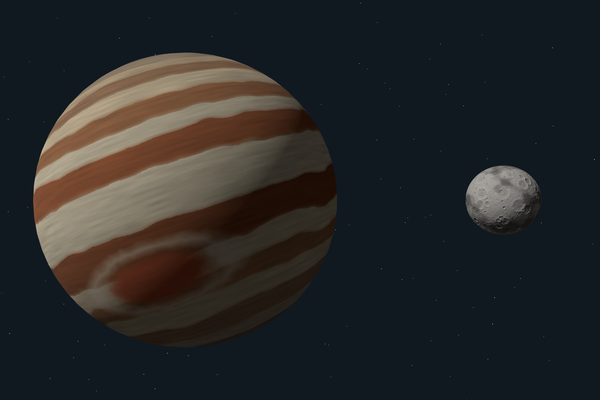
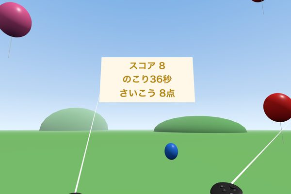
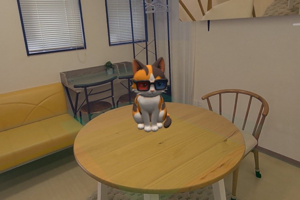
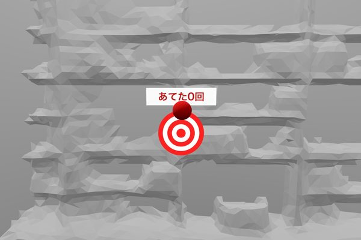

WebXR for Stray Cats
Bonus Page
Here you'll find the book's bonus downloads and the Sample Gallery.
Bonus Downloads
One zip file contains the template, each chapter's starting point and finished version, the 3D model of Nekobi, and the prompt collection. Download it on your Mac.
Download the bonus files (zip)
Double-click the zip to open it. Copy the folders to anywhere you like on your Mac, then move to them in Terminal to use them. See Chapter 1 and Chapter 3 (3-1) of the book for details.
Sample Gallery
These are the four projects you'll build in this book. Open this page in the Quest browser, choose a project, and press the Play in VR or Play in MR button.

Chapter 3VRA Planet in Space
Chapter 4VRBalloon Pop
Chapter 5MRNekobi in Your Room
Chapter 6MRBall Play in Your Room
The projects in Chapters 5 and 6 can use your floor, desk, and walls once you've finished the Quest's Space Setup.